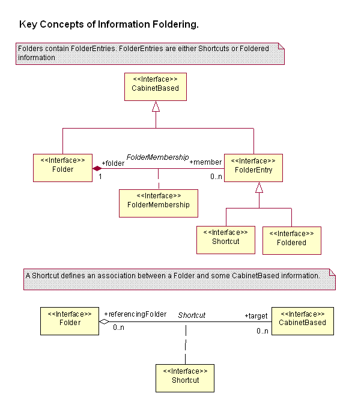
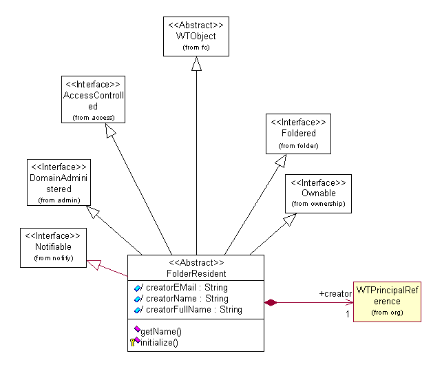

See: Description
| Interface | Description |
|---|---|
| CabinetBased |
An interface that defines information as being part of a Cabinet and
Folder organization structure.
|
| CabinetMember |
A CabinetMember is an object that can be put in a Cabinet, but not a
SubFolder.
|
| Folder |
A Folder acts a container of information.
|
| Foldered |
A Foldered object is one that lives in a Folder (Cabinet or SubFolder).
|
| FolderEntry |
A FolderEntry is an object that can be considered one of the entries
in a folder.
|
| FolderEntryLink |
Internal implementation interface that helps abstract common characteristics
of
FolderMembership associations and Shortcut
associations. |
| FolderMembership |
A FolderMembership association defines the basic containment characteristic
of a Folder.
|
| FolderService |
Defines foldering related business operations.
|
| IteratedFoldered |
Information that is
Iterated and is stored in folders is
handled differently than other Foldered information. |
| Shortcut |
Provides a means for one Folder to have references to other Folder's
or FolderEntry objects (ie to any CabinetBased object).
|
| Class | Description |
|---|---|
| Cabinet |
A Cabinet is a major organizing characteristic for information residing
in folders.
|
| CabinetIdentity |
Identification object for a Cabinet which is used to change the name
(identity) of a cabinet.
|
| CabinetReference |
Provides a means to reference a Cabinet.
|
| FolderCollationKeyFactory |
A collation key factory for Foldered objects in a folder.
|
| FolderHelper |
This class provides access to the Windchill foldering capability.
|
| FolderMemberLink |
Holds a persistent association between a Folder (Cabinet or SubFolder)
and a Foldered object (it's member).
|
| FolderServiceEvent |
Used to represent events occuring within the FolderService.
|
| IteratedFolderMemberLink |
Holds a persistent association between a Folder (Cabinet or SubFolder)
and the latest iteration of an
IteratedFoldered object (it's
member). |
| IteratedShortcutLink |
A persistent assocation between a Folder and the latest iteration of
an iterated member of a Folder.
|
| ShortcutLink |
A persistent assocation between a Folder and a non-iterated CabinetBased
object.
|
| StandardFolderService |
Use the
newStandardFolderService static factory method(s),
not the StandardFolderService constructor, to construct
instances of this class. |
| SubFolder |
A SubFolder is a non-root folder, ie it resides in a Cabinet.
|
| SubFolderIdentity |
Defines the unique Identity of a SubFolder.
|
| SubFolderLink |
Provides a persistent association between a SubFolder with it's parent
Folder.
|
| SubFolderLinkConstraint |
Defines the class which performs the uniqueness constraint for a SubFolder.
|
| SubFolderLinkIdentity |
Class that defines the uniquness constraint for a SubFolder.
|
| Exception | Description |
|---|---|
| FolderException |
Supported API: true Extendable: false |
| FolderNotFoundException |
Supported API: true Extendable: false |
The folder service resides in the package wt.folder. It provides the means to organize information into a cabinet and folder hierarchy, much the same way that this is done in operating systems available today. (Note that these are not operating system folders, merely objects that act much like operating system folders.) The cabinets provide not only a means to group information, but also a means to associate information with administrative policies for access control, indexing, and notifications. Folders provide a further breakdown of the information in a cabinet. Because it is common to view information with more than one organization, it is possible to construct alternative folder organizing structures that contain shortcuts (like operating system shortcuts, symbolic links, and aliases) to information residing in other folders.
The following figure shows the essential associations and interfaces involved with managing folder organized information.

The following figure contains a representation of the object model for foldered information.

Typically, new objects that are to be foldered should extend the interfaces provided in the wt.enterprise package. For simple foldered objects, use the FolderResident class shown above. If additional characteristics (such as life cycle management or versioning) are required, use the Managed or RevisionControlled classes.
The CabinetBased interface defines characteristics of information organized by the foldering service. It has a name and a location that indicates the path to the object in the cabinet and folder hierarchy.
The Foldered interface is asserted by objects that are to be organized into a folder. An object can reside in (that is, be a member of) one and only one Folder.
The Folder interface is asserted for an object that organizes information. Both a Cabinet and a SubFolder perform this organizing mechanism. There are two types of Cabinets: personal and shared. A personal cabinet is intended to hold information belonging to (owned by) a specific user. A shared cabinet contains information that is intended for general access by other users/groups in the system (depending on administrative policies).
The FolderHelper is a class that provides access to the functions of the foldering package. Using these methods, an object is associated with a Folder for its initial creation, and can determine its full folder path, its cabinet, and so on. The FolderHelper also provides a member service variable which gives access to the server functionality of the FolderService.
The FolderService interface defines the client-server API of the folder service. These operations are used to determine the contents of folders and move an object from one folder to another, as well as perform operations to assist in programmatically constructing a cabinet and folder hierarchy.
The FolderServiceEvent is an event emitted when an object moves from one folder to another. The intent of the event is to allow other services and managers the opportunity to validate, veto, or perform additional work when an object is moved from one folder to another.
The business rules for foldering are based on the access control that it enforces. The most basic rule is that to put an object into a folder, or remove it from the folder, you must have modify permission on that folder. This is in addition to whatever permission you must directly have to create or delete the object. To move an object from one folder to another, you must have modify permission on the source and destination folders, as well as permission to delete the object from its source folder and to create it in its destination folder. An additional rule is that you can not move an object from a shared cabinet to a personal cabinet.
wt.folder.cache provides caching of folder related objects.� It is not customizable.
The wt.folder package provides interfaces which custom business objects can implement to make them �Foldered�.� This can also be done by implementing one of the basic Enterpise abstractions in the wt.enterprise package � often the preferred method.
Helper and service classes provide methods for managing foldered objects.
Foldered�
interface
IteratedFoldered interface